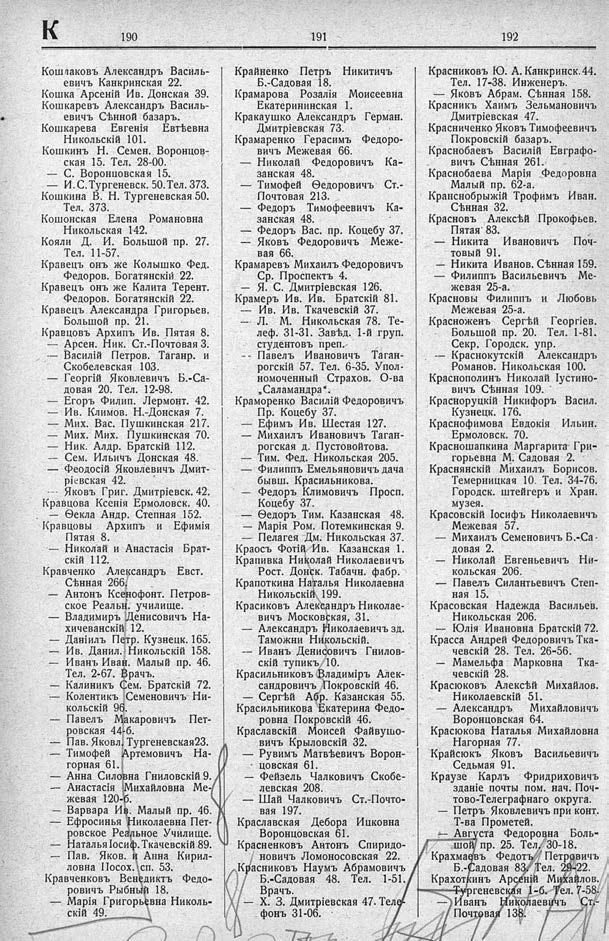

Лист источника 414
Скан

Распознанный текст
К 190
Кошлаковъ Александръ Василь-
евичъ Канкринская 22.
Кошка Арсеній Ив. Донская 39.
Кошкаревъ Александръ Василь-
евичъ Сѣнной ба coldest.
Кошкарева Евгенія Евтѣевна
Никольскій 101.
Кошкинъ Н. Семен. Воронцов-
ская 15. Тел. 28-00.
— С. Воронцовская 15.
— И. С. Тургеневск. 50. Тел. 373.
Кошкина В. Н. Тургеневская 50.
Тел. 373.
Кошонская Елена Романовна
Никольская 142.
Кояли Д. И. Большой пр. 27.
Тел. 11-57.
Кравецъ онъ же Колышко Фед.
Федоров. Богатянскій 22.
Кравецъ онъ же Калита Терент.
Федоров. Богатянскій 22.
Кравецъ Александра Григорьев.
Большой пр. 21.
Кравцовъ Архипъ Ив. Пятая 8.
— Арсен. Ник. Ст.-Почтовая 3.
— Василій Петров. Таганр. и
Скобелевская 103.
— Георгій Яковлевичъ Б.-Са-
довая 20. Тел. 12-98.
— Егоръ Филип. Лермонт. 42.
— Ив. Климов. Н.-Донская 7.
— Мих. Вас. Пушкинская 217.
— Мих. Мих. Пушкинская 70.
— Ник. Алдр. Братскій 112.
— Сем. Ильичъ Донская 48.
— Ѳеодосій Яковлевичъ Дмит-
ріевская 42.
— Яковъ Григ. Дмитріевск. 42.
Кравцова Ксенія Ермоловск. 40.
— Ѳекла Андр. Степная 152.
Кравцовы Архипъ и Ефимія
Пятая 8.
— Николай и Анастасія Брат-
скій 112.
Кравченко Александръ Евст.
Сѣнная 266.
— Антонъ Ксенофонт. Петров-
ское Польн. училище.
— Владимиръ Денисовичъ На-
хичеванскій 12.
— Даніилъ Петр. Кузнецк. 165.
— Ив. Данил. Никольскій 158.
— Иванъ Иван. Малый пр. 46.
Тел. 2-67. Врачъ.
— Калиникъ Сем. Братскій 72.
— Колентикъ Семеновичъ Ни-
кольскій 96.
— Павелъ Макаровичъ Пет-
ровская 44-б.
— Пав. Яковл. Тургеневская 23.
— Тимофей Артемовичъ На-
горная 61.
— Анна Силовна Гниловскій 9.
— Анастасія Михайловна Ме-
жевая 120-б.
— Варвара Ив. Малый пр. 46.
— Ефросинья Николаевна Пет-
ровское Реальное Училище.
— Наталья Іосиф. Ткачевскій 89.
— Пав. Яков. и Анна Кирил-
ловна Посох. сп. 53.
Кравченковъ Венедиктъ Федо-
ровичъ Рыбный 18.
— Марія Григорьевна Николь-
скій 49.
191
Крайненко Петръ Никитичъ
Б.-Садовая 18.
Крамарова Розалія Моисеевна
Екатерининская 1.
Кракаушко Александръ Герман.
Дмитріевская 73.
Крамаренко Герасимъ Федоро-
вичъ Межевая 66.
— Николай Федоровичъ Ка-
занская 48.
— Тимофей Ѳедоровичъ Ст.-
Почтовая 213.
— Федоръ Тимофеевичъ Ка-
занская 48.
— Федоръ Вас. пр. Коцебу 37.
— Яковъ Федоровичъ Меже-
вая 66.
Крамаревъ Михаилъ Федоровичъ
Ср. Проспектъ 4.
— Я. С. Дмитріевская 126.
Крамеръ Ив. Ив. Братскій 81.
— Ив. Ив. Ткачевскій 37.
— Л. М. Никольская 78. Те-
леф. 31-31. Завѣд. 1-й груп.
студентовъ преп.
— Павелъ Ивановичъ Таган-
рогскій 57. Тел. 6-35. Упол-
номоченный Страхов. О-ва
„Саламандра“.
Краморенко Василій Федоровичъ
Пр. Коцебу 37.
— Ефимъ Ив. Шестая 127.
— Михаилъ Ивановичъ Таган-
рогская д. Пустовойтова.
— Тим. Фед. Никольская 205.
— Филиппъ Емельяновичъ дача
бывш. Красильникова.
— Федоръ Климовичъ Просп.
Коцебу 37.
— Ѳедоръ Тим. Казанская 48.
— Марія Ром. Потемкинская 9.
— Пелагея Дм. Никольская 37.
Краосъ Фотій Ив. Казанская 1.
Крапивка Николай Николаевичъ
Рост. Донск. Табачн. фабр.
Крапоткина Наталья Николаевна
Никольскій 199.
Красиковъ Александръ Николае-
вичъ Московская, 31.
— Александръ Николаевичъ зд.
Таможни Никольскій.
— Иванъ Денисовичъ Гнилов-
скій тупикъ 10.
Красильниковъ Владиміръ Алек-
сандровичъ Покровскій 46.
— Сергѣй Абр. Казанская 55.
Красильникова Екатерина Федо-
ровна Покровскій 46.
Краславскій Моисей Файвушо-
вичъ Крыловскій 32.
— Рувимъ Матвѣевичъ Ворон-
цовская 61.
— Фейзель Чалковичъ Скобе-
левская 208.
— Шай Чалковичъ Ст.-Почто-
вая 197.
Краславская Дебора Ицковна
Воронцовская 61.
Красненковъ Антонъ Спиридо-
новичъ Ломоносовская 22.
Красниковъ Наумъ Абрамовичъ
Б.-Садовая 48. Тел. 1-51.
Врачъ.
— Х. З. Дмитріевская 47. Теле-
фонъ 31-06.
192
Красниковъ Ю. А. Канкринск. 44.
Тел. 17-38. Инженеръ.
— Яковъ Абрам. Сѣнная 158.
Красникъ Хаимъ Зельмановичъ
Дмитріевская 47.
Красниченко Яковъ Тимофеевичъ
Покровскій базаръ.
Краснобаевъ Василій Евграфо-
вичъ Сѣнная 261.
Краснобаева Марія Федоровна
Малый пр. 62-а.
Краснобрыжій Трофимъ Иван.
Сѣнная 32.
Красновъ Алексѣй Прокофьев.
Пятая 83.
— Никита Ивановичъ Поч-
товый 91.
— Никита Иванов. Сѣнная 159.
— Филиппъ Васильевичъ Ме-
жевая 25-а.
Красновы Филиппъ и Любовь
Межевая 25-а.
Красноженъ Сергѣй Георгіев.
Большой пр. 20. Тел. 1-81.
Секр. Городск. упр.
— Краснокутскій Александръ
Романов. Никольская 100.
Краснополинъ Николай Іустино-
вичъ Сѣнная 109.
Красноруцкій Никифоръ Васил.
Кузнецк. 176.
Краснофимова Евдокія Ильин.
Ермоловск. 70.
Красношапкина Маргарита Гри-
горьевна М. Садовая 2.
Краснянскій Михаилъ Борисов.
Темерницкая 10. Тел. 34-76.
Городск. штейгеръ и Хран.
музея.
Красовскій Іосифъ Николаевичъ
Межевая 57.
— Михаилъ Семеновичъ Б.-Са-
довая 2.
— Николай Евгеньевичъ Ни-
кольская 206.
— Павелъ Силантьевичъ Степ-
ная 15.
Красовская Надежда Васильев.
Никольская 206.
— Юлія Ивановна Братскій 72.
Красса Андрей Федоровичъ Тка-
чевскій 28. Тел. 26-56.
— Мамельфа Марковна Тка-
чевскій 28.
Красюковъ Алексѣй Михайлов.
Николаевскій 51.
— Александръ Михайловичъ
Воронцовская 64.
Красюкова Наталья Михайловна
Нагорная 77.
Крайсюкъ Яковъ Васильевичъ
Седьмая 91.
Краузе Карлъ Фридриховичъ
зданіе почты пом. нач. Поч-
тово-Телеграфнаго округа.
— Петръ Яковлевичъ при конт.
Т-ва Прометей.
— Августа Федоровна Боль-
шой пр. 25. Тел. 30-18.
Крахмаевъ Федотъ Петровичъ
Б.-Садовая 83. Тел. 29-22.
Крахоткинъ Арсеній Михаилов.
Тургеневская 1-б. Тел. 7-58.
— Иванъ Николаевичъ Ст.-
Почтовая 138.